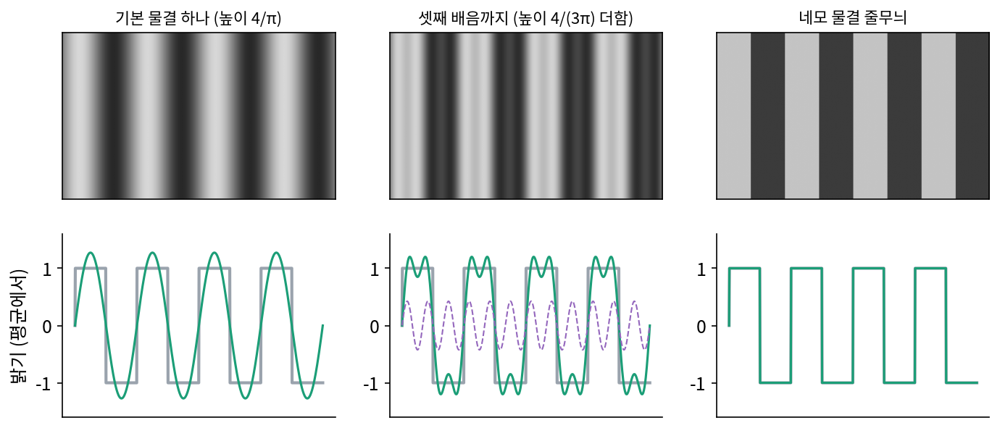
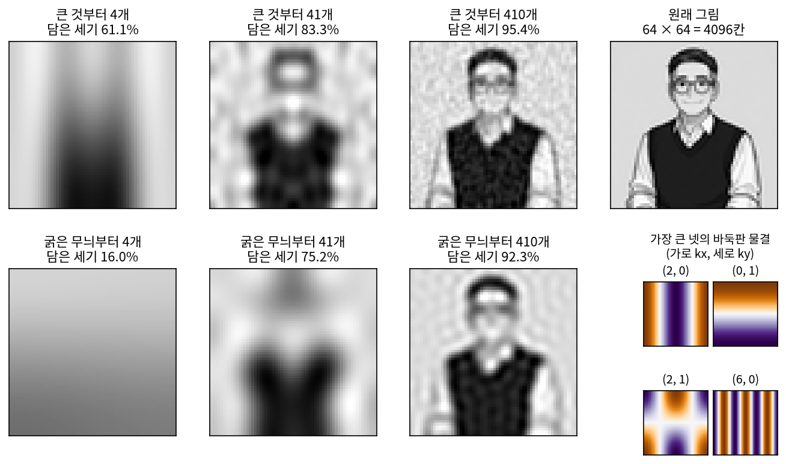
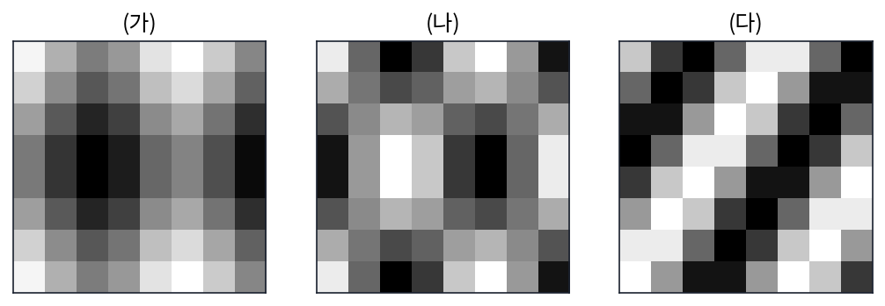
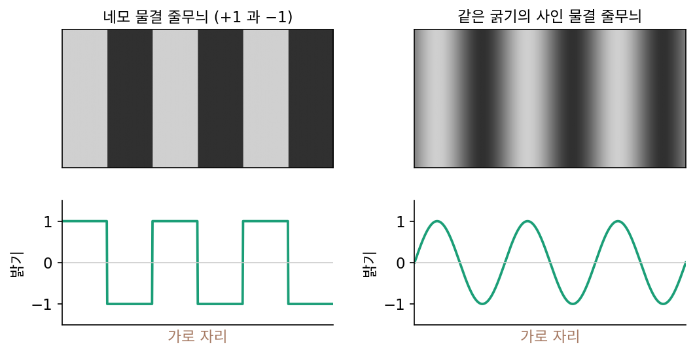
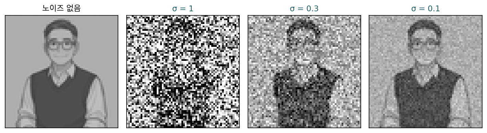

그림: 바둑판 물결을 큰 계수부터
소리는 시간이라는 줄 하나 위에 놓여 있어서 물결도 한 방향으로만 출렁였지만, 사진의 밝기는 가로와 세로, 두 방향으로 바뀐다. 줄무늬 셔츠는 한 방향으로만 바뀌고, 체크무늬 셔츠는 두 방향으로 바뀐다. 평면 위의 신호를 적으려면 물결이 두 방향으로 출렁여야 할 텐데, 그런 물결은 어떻게 만들까? 그리고 소리에서와 달리 그림에서는 「큰 계수부터」와 「굵은 무늬부터」가 같은 순서가 될까?
역사: 줄무늬로 눈의 물결을 재다
사람의 눈이 그림을 물결로 나눠 보는지를 실험으로 물은 사람들이 있다. 1968년 캠벨(F. W. Campbell)과 롭슨(J. G. Robson)은 『생리학 저널』에 「격자의 보임에 푸리에 분석을 적용하기」를 냈다. 화면에 밝고 어두운 줄무늬를 띄우고, 줄무늬의 밝고 어두움 차이(대비)를 조금씩 키워 가며 관찰자가 줄무늬를 처음 알아보는 대비를 쟀다. 줄무늬의 모양은 사인 물결, 네모 물결, 톱니 물결 등 여러 가지였다.
결과는 두 가지였다. 넓은 범위의 줄무늬 굵기에서, 줄무늬가 처음 보이는 대비는 줄무늬를 푸리에 급수로 적었을 때 기본 물결의 높이만으로 정해졌다. 그리고 네모 물결 줄무늬는 대비를 꽤 키울 때까지 같은 굵기의 사인 물결 줄무늬와 구별되지 않다가, 높은 배음들이 각자의 문턱에 닿을 만큼 대비가 커지고 나서야 네모로 보였다. 두 사람은 눈이 줄무늬의 굵기마다 따로 반응하는 여러 통로를 가진 것처럼 행동한다고 해석했다. 눈도 그림을 굵기마다의 물결로 나눠 받고, 높이가 문턱을 넘은 물결부터 본다는 해석이다.


눈이 줄무늬를 물결로 나눠 본다는 건, 오늘이라면 줄무늬 그림을 푸리에 변환해 보면 되는 거 아니에요?

그림은 변환할 수 있죠. 그런데 캠벨과 롭슨이 알고 싶었던 건 그림이 아니라 눈 쪽이었어요. 눈 안에서 무엇이 일어나는지를 바로 잴 수 있었나요?

아… 관찰자에게서 받을 수 있는 건 「보인다」와 「안 보인다」뿐이네요.

그럼 대비를 조금씩 올리면서 처음 보이는 순간을 받아 적은 거예요? 줄무늬 굵기마다, 모양마다 다시?

그래요. 대답 하나하나는 보이는지 아닌지인데, 그것을 굵기와 모양을 바꿔 가며 모아서 「굵기마다 따로 반응하는 통로가 있는 것처럼 행동한다」까지 거슬러 올라갔어요. 네모 줄무늬가 꽤 진해질 때까지 사인 줄무늬와 구별되지 않는다는 것도 그렇게 나온 결과고요.

네모가 사인처럼 보인다니, 계산만 해서는 짐작하기 어렵겠네요.
그 실험의 줄무늬는 한 방향으로만 바뀌었어요. 사진처럼 가로와 세로로 다 바뀌는 그림을 물결로 나누려면, 물결을 어떻게 만들어야 할까요?
선생님 그림을 바둑판 물결 4096개로
이 책의 대화에 나오는 선생님 그림을 회색으로 바꿔 64 × 64 칸으로 줄였다. 칸 4096개, 밝기는 0(검정)~1(흰색)이고 평균 0.642를 먼저 뺐다. 화음과 같은 칸 수다.
두 방향으로 출렁이는 물결은 한 방향 물결 둘을 곱해서 만든다. 가로로 코사인 반 물결 kx개가 드는 물결과, 세로로 반 물결 ky개가 드는 물결을 칸마다 곱하면, 가로·세로로 밝고 어두움이 엇갈리는 무늬가 된다. kx 와 ky 가 둘 다 0이 아니면 바둑판처럼 보이고, 한쪽이 0이면 한 방향 줄무늬다. 이렇게 가로 물결과 세로 물결을 곱한 무늬를 바둑판 물결 (가로 물결 × 세로 물결 / two-dimensional cosine basis function)이라 하자.
바둑판 물결 4096개는 서로 수직이고 길이가 1이다. 가로 물결끼리 수직이고 세로 물결끼리 수직이므로 곱도 수직이 되기 때문에, 최선 K항 근사의 계산이 그대로 통한다. 그림 조각을 코사인 무늬로 적는 2차원 이산 코사인 변환과 JPEG 의 쓰임은 디퓨전 책이 8칸짜리 손계산으로 다룬다.
선생님 그림의 계수 가운데 가장 큰 것은 (kx, ky) = (2, 0), 가로로 반 물결 두 개가 드는 세로 줄무늬로, 가운데의 짙은 조끼와 양옆의 밝은 배경이 이루는 「밝음–어두움–밝음」이 혼자서 세기의 33.1%를 담는다. 다음은 위는 밝고 아래는 어두운 가로 줄무늬 (0, 1)(15.9%)로, 위쪽 배경과 아래쪽 조끼의 차이다. 그다음이 (2, 1)(9.0%), (6, 0)(3.1%) 순이다.
계수를 큰 것부터 K개, 굵은 무늬부터(√(kx² + ky²)가 작은 것부터) K개 남겨 비교하면 다음과 같다.
| 남긴 계수 K | 큰 것부터: 담은 세기 | 큰 것부터: 상대 오차 | 굵은 무늬부터: 담은 세기 | 굵은 무늬부터: 상대 오차 |
|---|---|---|---|---|
| 1 | 33.1% | 81.8% | 0.0% | 100.0% |
| 4 | 61.1% | 62.3% | 16.0% | 91.7% |
| 41 (1%) | 83.3% | 40.9% | 75.2% | 49.8% |
| 410 (10%) | 95.4% | 21.5% | 92.3% | 27.7% |
| 2048 (50%) | 99.7% | 5.5% | 98.6% | 12.0% |
굵은 무늬부터의 처음 하나는 평균 자리 (0, 0)이라 이미 뺀 값이고, 다음 (1, 0)은 왼쪽은 밝고 오른쪽은 어두운 물결인데 좌우가 거의 같은 선생님 그림에서는 세기의 0.05%뿐이다. 처음 몇 개를 넘기면 두 순서의 차이는 소리에서보다 훨씬 작다. 계수 41개에서 76.2% 대 0.0%였던 소리와 달리 그림은 83.3% 대 75.2%다. 큰 계수 41개 가운데 25개가 √(kx² + ky²) ≤ 10인 굵은 무늬이지만, 두 순서가 같은 것은 아니다. 큰 계수 41개와 굵은 무늬 41개가 겹치는 것은 17개뿐이고, 큰 계수 쪽에는 안경테와 조끼 가장자리를 만드는 √(kx² + ky²) = 20.1짜리 무늬까지 들어 있다. 세기 90%에 큰 것부터는 129개, 굵은 무늬부터는 270개가 든다.

큰 것부터 4개면 조끼와 배경의 큰 덩어리가, 41개면 머리와 안경이 놓일 자리가, 410개면 얼굴이 나타난다. 위젯에서 재생 단추를 누르면 바둑판 물결이 하나씩 더해지며 이 순서로 선생님이 나타난다.
ML에서: 굵은 무늬부터 그리는 생성 모델
왜 그림에서는 「큰 것부터」와 「굵은 무늬부터」가 비슷할까? 답은 그림의 파워 스펙트럼 모양에 있다. 선생님 그림에서 √(kx² + ky²)이 같은 구간마다 계수 제곱의 평균을 구해 로그 눈금에 그리면 기울기가 −2.47이다. 굵은 무늬일수록 거듭제곱 꼴로 세다. 딜레만은 앞의 블로그 글에서 사진 모음의 파워 스펙트럼이 지수 2 근처의 거듭제곱 꼴을 따른다고 적고(그가 쓴 사진 모음에서 맞춘 값은 2.454), 노이즈를 더하는 일이 가는 무늬부터 덮는다는 데서 그림 디퓨전 모델이 굵은 무늬부터 차례로 정해 간다고 설명했다.
굵은 것부터 그리는 순서를 모델 구조에 직접 넣은 예도 있다. 톈(Keyu Tian)과 동료들의 VAR(「Visual Autoregressive Modeling」, 2024)은 언어 모델처럼 토큰을 하나씩 내놓는 대신, 작은 해상도의 그림 토큰을 먼저 내놓고 그것을 받아 더 큰 해상도의 토큰을 내놓는 「다음 크기 예측」으로 그림을 만들어, NeurIPS 2024의 최우수 논문상을 받았다. 노이즈가 어느 계수부터 덮는지는 아래 문제 6에서 선생님 그림으로 센다.
문제 4. 체크무늬 원단을 무늬판 몇 장으로
원단 공장에 8 × 8 칸짜리 바둑판 물결 무늬판 64장이 있고, 무늬판마다 진하기를 정해 겹쳐 찍을 수 있다. 아래 세 무늬는 각각 무늬판 몇 장이 있어야 똑같이 찍을 수 있는가? (가) 가로로 반 물결 3개인 줄무늬와 세로로 반 물결 2개인 줄무늬를 겹쳐 칠한 체크무늬(두 무늬를 더한 것). (나) 같은 두 물결을 칸마다 곱한 무늬. (다) 가로 반 물결 3개와 세로 반 물결 2개만큼 비스듬히 기운 줄무늬(코사인 안에서 두 각도를 더한 것).

(가)가 제일 바둑판처럼 생겼으니까 무늬판 한 장이면 될 것 같아요. (나)는 두 물결이 들어 있으니 두 장이고요.
바둑판 물결 한 장은 가로 물결과 세로 물결을 어떻게 합친 거였죠?

곱한 거요. 그럼 거꾸로네요. (나)가 딱 무늬판 (3, 2) 한 장이에요. (가)는 더한 거니까… (3, 0) 세로 줄무늬 판과 (0, 2) 가로 줄무늬 판, 두 장이고요. 눈에 체크무늬로 보인다고 무늬판도 체크인 건 아니었네요.
계산해 보니 맞아. (나)는 0이 아닌 계수가 하나, (가)는 둘이야. (다)는 비스듬하니까 한두 장이겠지 했는데, 0이 아닌 계수가 17개야. 가장 큰 게 4.0이고 다음이 2.739, 1.777이야.
cos(a + b)를 풀어 보면 왜 그런지 보여요.

풀면 cos a cos b − sin a sin b요. 앞 항은 무늬판 한 장이고… 뒤 항의 sin 은 코사인 무늬판에 없네요.
무늬판에 없는 모양은 어떻게 찍어야 하죠?

여러 코사인 판으로 나눠 흉내 내야 해요. 그래서 판이 많이 들어요. 바둑판 물결은 가로·세로 방향에 맞춘 축이라 비스듬한 줄은 비싸네요.

엑셀에서 가로줄 서식이랑 세로줄 서식은 한 번씩 주면 되는데, 대각선 무늬는 칸마다 손으로 칠해야 하는 거랑 비슷하네.
문제 5. 네모 줄무늬는 언제 네모로 보이나
밝기가 +1 과 −1 로 번갈아 바뀌는 네모 물결 줄무늬가 있다. (가) 이 줄무늬를 푸리에 급수로 적을 때 기본 물결과 셋째 배음의 높이는 얼마인가? (나) 기본 물결 하나, 셋째 배음까지, 다섯째 배음까지가 담은 세기는 각각 몇 %인가? (다) 눈은 물결마다 따로, 높이가 문턱을 넘어야 본다고 하자. 기본 물결의 굵기와 셋째 배음의 굵기에서 문턱이 같다고 가정하면, 대비를 0에서 키울 때 네모 줄무늬가 처음 보이는 대비와 사인 줄무늬와 구별되기 시작하는 대비는 각각 사인 줄무늬 문턱의 몇 배인가?

(가)는 네모 물결 급수에서 기본 물결이 4/π = 1.273, 셋째가 4/(3π) = 0.424야. 네모 물결 높이 1보다 기본 물결이 더 높네.
(나)는 네모 물결의 세기가 1이고 기본 물결 하나의 세기는 (4/π)²/2 = 8/π²이니까 81.1%예요. 셋째까지 90.1%, 다섯째까지 93.3%고요.
(다)는 어떻게 따져 볼까요?
음, 기본 물결이 사인 줄무늬보다 1.273배 높으니까, 네모 줄무늬는 사인 문턱의 1/1.273 = π/4 = 0.785배 대비에서 먼저 보이겠네요. 구별은… 셋째 배음도 문턱에 닿아야 하니까, 높이가 3분의 1이라 3배 더 키워서 3π/4 = 2.356배요.

계산은 맞아요. 그런데 문제의 단서, 「두 굵기에서 문턱이 같다」를 빼면 어떻게 될까요?

눈이 굵기마다 문턱이 다르면 2.356배가 달라져요. 셋째 배음은 줄무늬가 세 배 가늘어서, 그 굵기에서 눈이 더 둔하면 대비를 더 키워야 하고, 더 예민하면 덜 키워도 돼요.
그래서 캠벨과 롭슨이 굵기마다 문턱을 따로 쟀겠네요.

그래요. 그 두 사람이 한 일이 줄무늬 굵기마다 문턱을 재는 것이었고, 네모 줄무늬가 언제 네모로 보이는지는 그 문턱 곡선으로 예측됐어요. 눈도 큰 물결부터 보고, 작은 물결은 문턱을 넘어야 보는 거예요.
문제 6. 노이즈가 덮으면 어떤 계수가 남나
선생님 그림(64 × 64, 밝기 0~1)의 칸마다 표준편차 σ 인 노이즈를 더한다. (가) 바둑판 물결 계수 하나에는 표준편차가 얼마인 노이즈가 더해지는가? (나) σ = 1, 0.3, 0.1 일 때 크기가 σ 보다 큰 계수는 몇 개이고, 그 계수들이 담은 세기는 몇 %이며, 그 계수들의 √(kx² + ky²) 평균은 얼마인가? (다) 노이즈를 줄여 가며 그림을 되찾는 디퓨전 모델이 무엇부터 정하게 되는지 말하라.

(가)는 계수 하나가 칸 4096개를 섞은 값이잖아요. 4096개를 평균하면 표준편차가 √4096 = 64분의 1로 줄어드니까, 계수에는 σ/64쯤 남지 않을까요?
계수를 만들 때 칸마다 곱하는 수가 1/4096이었나요? 바둑판 물결 4096개는 정규 직교였죠.
아, 평균이 아니에요. 정규 직교면 물결 하나를 이루는 수들의 제곱합이 1이에요.
그럼 계수에 얹히는 노이즈의 분산은요?

칸마다 곱하는 수의 제곱을 σ²에 곱해 더하니까 σ² × 1 그대로예요. 평균이었다면 (1/4096)²을 4096번 더한 1/4096이 곱해졌을 거고요. 계수마다 표준편차 σ네요. 평균을 낸 게 아니라 축만 돌린 거라 노이즈 벡터의 길이도 그대로고요.
(나)는 σ = 1이면 σ보다 큰 계수가 30개, 담은 세기 81.4%, 반지름 평균 6.97이에요. σ = 0.3이면 226개, 92.9%, 15.61이고, σ = 0.1이면 1086개, 98.6%, 32.41이고요.
노이즈가 클 때 살아남는 30개는 어떤 무늬죠?

반지름이 가장 큰 것도 14.04라서 다 굵은 무늬예요. 노이즈는 모든 계수에 똑같은 크기로 얹히는데, 그림의 계수는 굵은 무늬일수록 크니까 굵은 것만 노이즈 위로 고개를 내미네요.
그래서 노이즈가 많을 때 모델이 믿고 정할 수 있는 건 굵은 무늬뿐이고, 노이즈를 줄여 가면서 가는 무늬가 하나씩 노이즈 위로 올라오는 거네. 축제 공연장에서는 친구가 크게 외친 낱말만 들리다가, 노래가 끝나야 작게 덧붙인 말까지 들리는 것처럼.